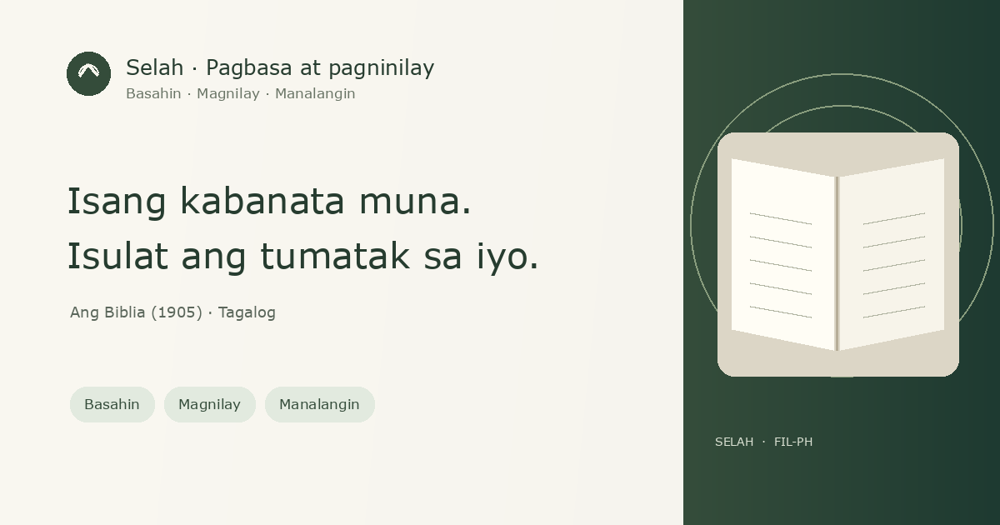

✳Selah
Bumalik sa SelahIsang payapang lugar para magbasa
Manatili sandali sa Salita. Isulat ang tumimo sa iyo.
Basahin ang buong Ang Biblia (1905) sa Tagalog. Isa itong lumang salin, hindi modernong Filipino revision. Pumili ng aklat at kabanata, maglaan ng sandali sa talata, at itala ang sarili mong pagninilay.
66 aklat · walang bayad · walang kailangang accountNananatili sa browser na ito ang iyong mga tala at bookmark; walang awtomatikong pag-sync sa ibang device.

Maaari mong i-download ang backup anumang oras. Para masukat ang paggamit, itinatala rin ng Selah ang mga pagbisita, pagbukas ng Biblia, at unang na-save na pagninilay gamit ang random na browser ID, tinatayang bansa/rehiyon, at campaign tag kung mayroon. Hindi ipinapadala ang nilalaman ng tala, panalangin, o piniling talata.
Ang Biblia · 1905
Pumili ng aklat at kabanata
Isulat ang iyong pagninilay
Isang bagay na napansin mo, tanong na naiwan sa iyo, o tugon mo sa Diyos. Ikaw ang pumipili kung ano ang isusulat.
Awtomatikong nase-save sa device na ito.